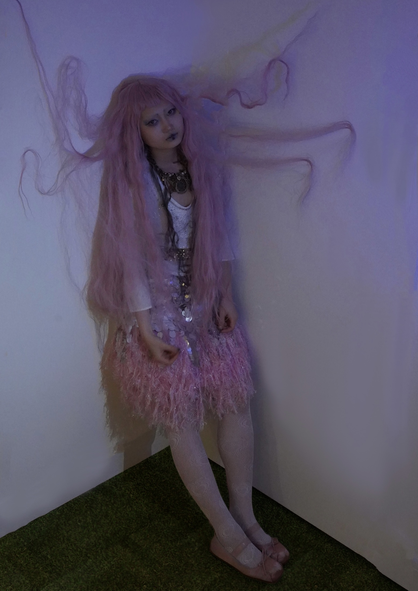

Presentation is only available in landscape mode.
Please rotate your device or resize your browser.
Instructions
You can use your trackpad, scroll wheel or touch device to scroll through the presentation.
Keyboard Controls
↑↓→←h or i